kelly m
 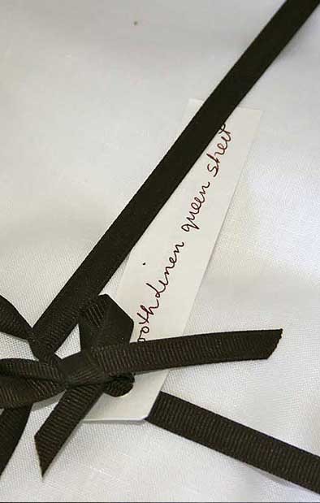
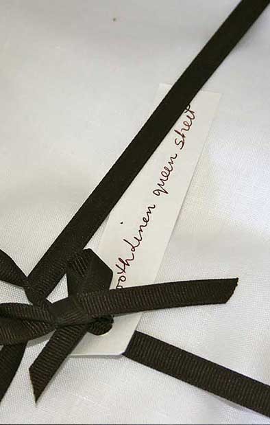
I have been searching for the last few months for some simple linen curtains for my bedroom in Ojai, CA. I pretty much looked at every catalog offering and then I found your site. I
loved your Smooth White Linen sheets for the bed, so decided to make the curtains myself from your sheet fabric — with a very large pocket at the top so they might look like they were casually draped over the rod.
They are the perfect weight, heavy enough to keep the room dark at night — but sheer enough to let in filtered diffused sunshine during the day. The pretty stitching on the hem gives them a more finish look…
I
now have 5 sets of these covering my vintage and not so beautiful windows. They catch a breeze and move around — no rings, no pulls, no bells 'n whistles.
Simple can be really beautiful. ~ Kelley Motschenbacher.
 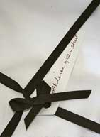
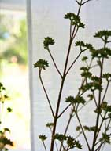
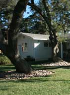
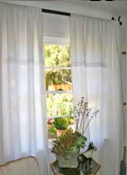
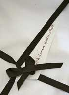
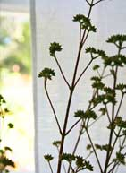
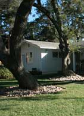
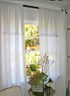
 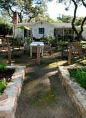
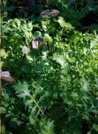
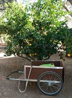
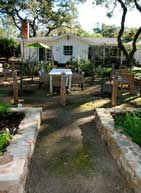
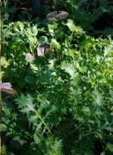
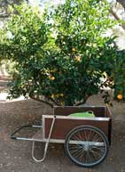
 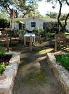
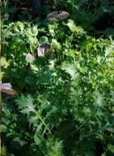
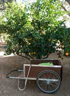
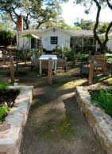
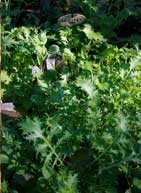
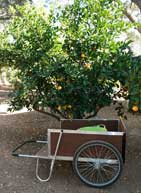